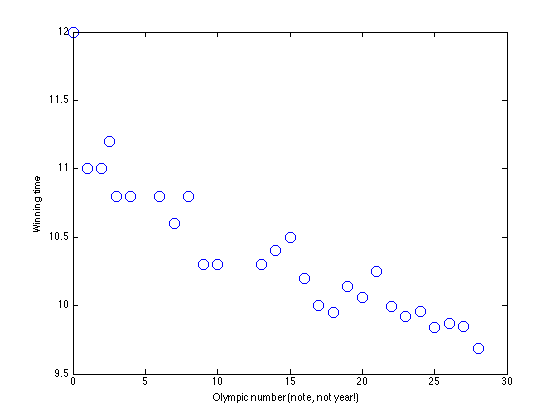
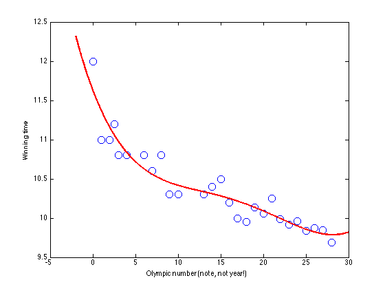
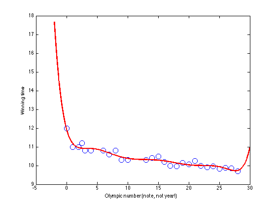

Contents
olymppoly.m
From A First Course in Machine Learning, Chapter 1. Simon Rogers, 31/10/11 [simon.rogers@glasgow.ac.uk]
clear all;close all;
Load the Olympic data and extract the mens 100m data
load ../data/olympics.mat x = male100(:,1); t = male100(:,2); % Rescale x for numerical reasons x = x - x(1); x = x./4; % Plot the data figure(1);hold off plot(x,t,'bo','markersize',10); xlabel('Olympic number (note, not year!)'); ylabel('Winning time');
Linear model
plotx = [x(1)-2:0.01:x(end)+2]'; X = []; plotX = []; for k = 0:1 X = [X x.^k]; plotX = [plotX plotx.^k]; end w = inv(X'*X)*X'*t; % Plot the model figure(1);hold off figure(1);hold off plot(x,t,'bo','markersize',10); xlabel('Olympic number (note, not year!)'); ylabel('Winning time'); hold on plot(plotx,plotX*w,'r','linewidth',2)

Quadratic model
plotx = [x(1)-2:0.01:x(end)+2]'; X = []; plotX = []; for k = 0:2 X = [X x.^k]; plotX = [plotX plotx.^k]; end w = inv(X'*X)*X'*t; % Plot the model figure(1);hold off figure(1);hold off plot(x,t,'bo','markersize',10); xlabel('Olympic number (note, not year!)'); ylabel('Winning time'); hold on plot(plotx,plotX*w,'r','linewidth',2)

Quartic model
plotx = [x(1)-2:0.01:x(end)+2]'; X = []; plotX = []; for k = 0:4 X = [X x.^k]; plotX = [plotX plotx.^k]; end w = inv(X'*X)*X'*t; % Plot the model figure(1);hold off figure(1);hold off plot(x,t,'bo','markersize',10); xlabel('Olympic number (note, not year!)'); ylabel('Winning time'); hold on plot(plotx,plotX*w,'r','linewidth',2)
8th order model
plotx = [x(1)-2:0.01:x(end)+2]'; X = []; plotX = []; for k = 0:8 X = [X x.^k]; plotX = [plotX plotx.^k]; end w = inv(X'*X)*X'*t; % Plot the model figure(1);hold off figure(1);hold off plot(x,t,'bo','markersize',10); xlabel('Olympic number (note, not year!)'); ylabel('Winning time'); hold on plot(plotx,plotX*w,'r','linewidth',2)
Warning: Matrix is close to singular or badly scaled.
Results may be inaccurate. RCOND = 4.085559e-25.
